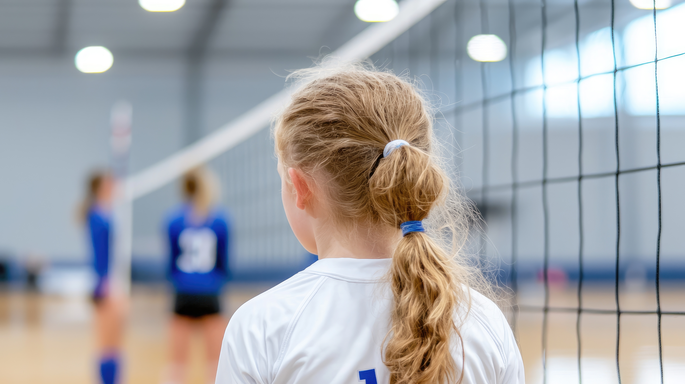

Sporting Spirits is located in the city of Denver, Colorado, being deeply rooted in this community.In the shadows of the Rocky Mountains, our founder keenly observed the pressing mental health challenges faced by many children. Volleyball, with its dynamic and inclusive nature, emerged as our instrument of change. It’s more than a game; it’s a catalyst for personal growth, teamwork, and emotional well-being. Our annualdonation-based volleyball camp serves as the cornerstone, a space where the rhythm of the gameharmonizes with the pulse of personal development. Sporting Spirits is committed to supporting low-income children in affluent communities, ensuringthey not only thrive in sports but also prioritize their mental health. This commitment is particularly poignant in Colorado, where the unique landscape of challenges makes our mission even more critical. Our goal is clear: to provide equal access to youth sports, foster personal growth, create opportunities for all, and significantly contribute to improving the mental health of our youth. Join us in this journey where every serve, every spike, and every shared victory becomes a step toward a healthier, happier, and more resilient generation.